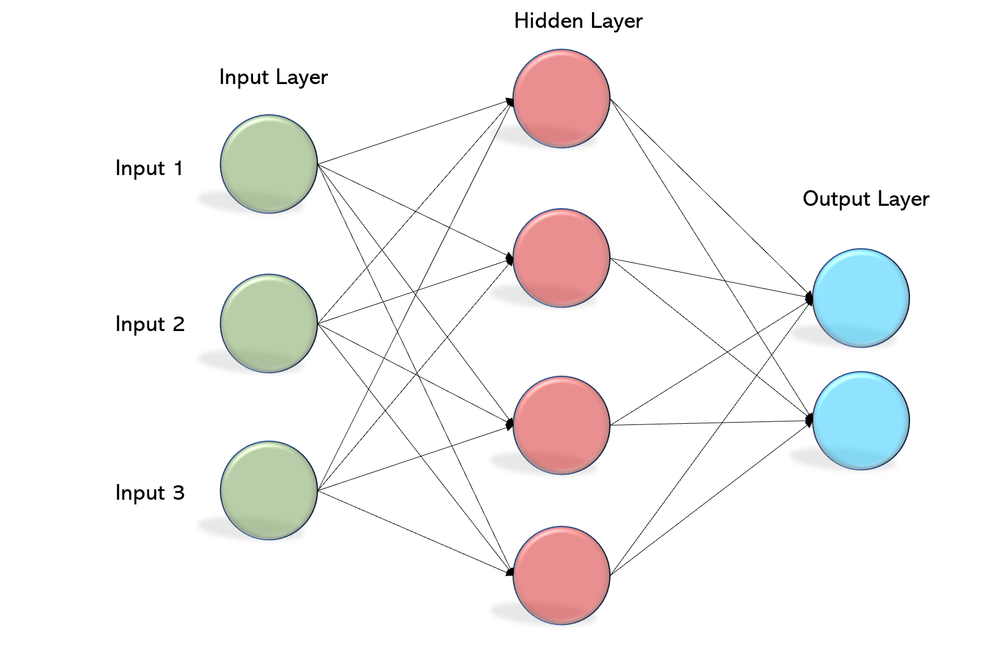
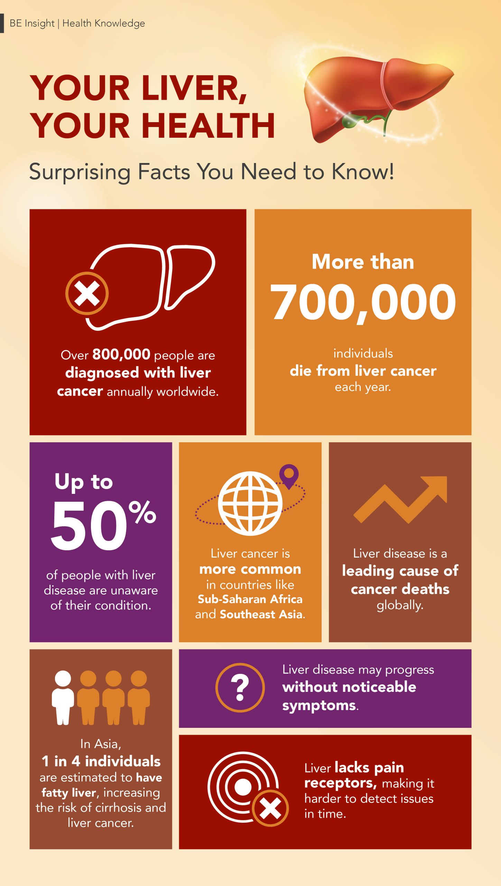
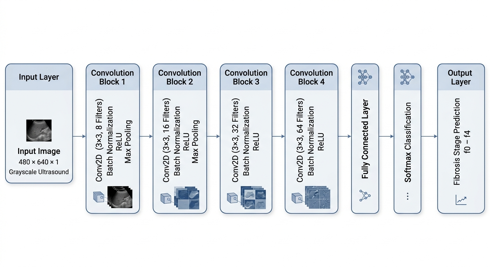

Machine Learning Methods
Multiple machine learning approaches were explored throughout this project in order to compare model interpretability, ensemble learning performance, nonlinear classification capability, and image-based medical analysis for liver cirrhosis staging.
Decision Tree
The Decision Tree model was selected as the baseline classifier because it was the simplest and most interpretable machine learning approach explored in this project. Tree depth was limited during training to reduce overfitting while maintaining interpretability of the classification process. The model was trained using the preprocessed clinical dataset and evaluated using the same 70% training, 15% validation, and 15% testing partitioning strategy applied throughout the project.
The model provided a transparent framework for evaluating how individual clinical features contributed to liver cirrhosis stage classification and served as a comparison point for the more advanced ensemble and neural network models explored later in the project.

Generalized Decision Tree classification structure used as the baseline interpretable machine learning model.
Random Forest
Built-In MATLAB Implementation
The Random Forest model was implemented using MATLAB’s
built-in fitcensemble function with bootstrap
aggregation (bagging). Multiple decision trees were trained
using randomized subsets of both the training data and
feature space in order to improve generalization performance
and reduce correlation between trees.
Predictions from individual trees were combined using majority voting to produce the final classification output, while feature importance analysis was used to identify the most influential clinical variables associated with liver cirrhosis staging.
From-Scratch Implementation
A second Random Forest model was developed from scratch in order to better understand the internal mechanics of ensemble learning algorithms. The custom implementation utilized bootstrap sampling, recursive decision tree construction, randomized feature selection, and majority voting aggregation across independently trained trees.
Although computationally slower than MATLAB’s built-in implementation, the from-scratch model provided greater insight into how Random Forest classifiers operate internally and how ensemble learning improves classification performance.

Generalized Random Forest ensemble architecture utilizing multiple independently trained Decision Trees.
MLP Neural Network
A custom multilayer perceptron (MLP) neural network was manually implemented in MATLAB for multiclass liver cirrhosis stage classification. Rather than relying on MATLAB’s built-in neural network training tools, the network was developed manually in order to provide direct control over network architecture, forward propagation, and backpropagation implementation.
The final network architecture consisted of an input layer, two hidden layers containing 64 and 32 neurons respectively, and an output layer containing three neurons corresponding to cirrhosis stages 1–3. ReLU activation functions were applied to the hidden layers, while the output layer utilized softmax activation for multiclass probability prediction.
The network was trained using gradient descent optimization with cross-entropy loss. During training, forward propagation was used to compute class probabilities, while backpropagation was manually implemented using the chain rule to calculate gradients and iteratively update network parameters.

Generalized Multilayer Perceptron neural network architecture used for nonlinear multiclass liver cirrhosis classification.
CNN Model
Convolutional Neural Networks (CNNs) were explored for direct ultrasound image-based liver fibrosis classification. Unlike the tabular machine learning approaches used earlier in the project, CNNs operate directly on imaging data and are capable of automatically extracting hierarchical spatial features using convolutional filters and pooling operations.
The CNN architecture was developed in MATLAB and accepted grayscale ultrasound images with dimensions of 480 × 640 × 1. The network consisted of four convolutional blocks utilizing convolutional layers, batch normalization, ReLU activation functions, and max pooling operations for progressive feature extraction.
The number of learned filters increased throughout the network from 8 to 16, 32, and 64 filters in order to capture increasingly complex imaging features associated with liver fibrosis progression.
The final classification stage utilized a fully connected layer, softmax layer, and classification layer to assign ultrasound images into one of five fibrosis categories, f0 through f4.
The network was trained using the Adam optimizer with a learning rate of 0.001, a mini-batch size of 32, and a maximum of 20 training epochs. Validation monitoring and early stopping criteria were also implemented during training to reduce overfitting and preserve the best-performing validation network.

CNN system architecture developed for ultrasound image-based liver fibrosis classification.